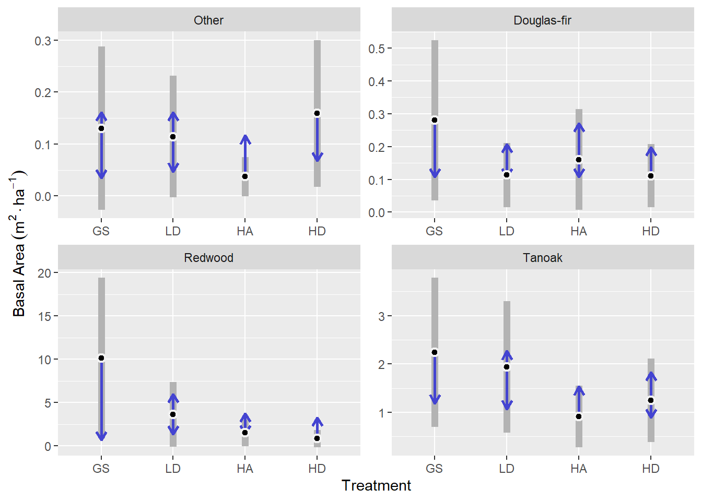
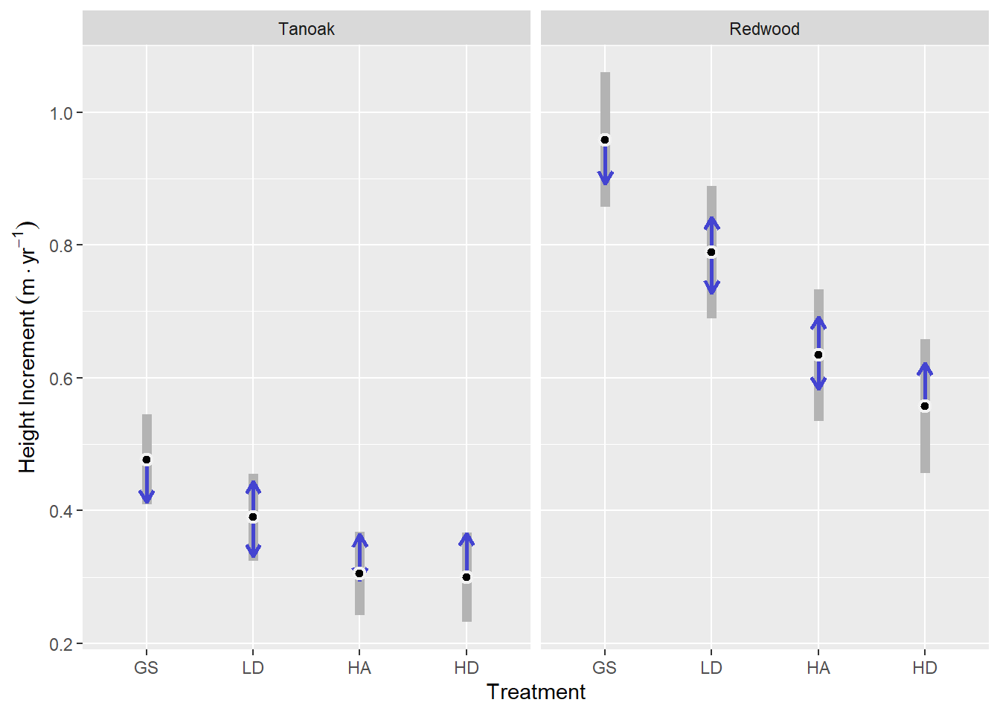
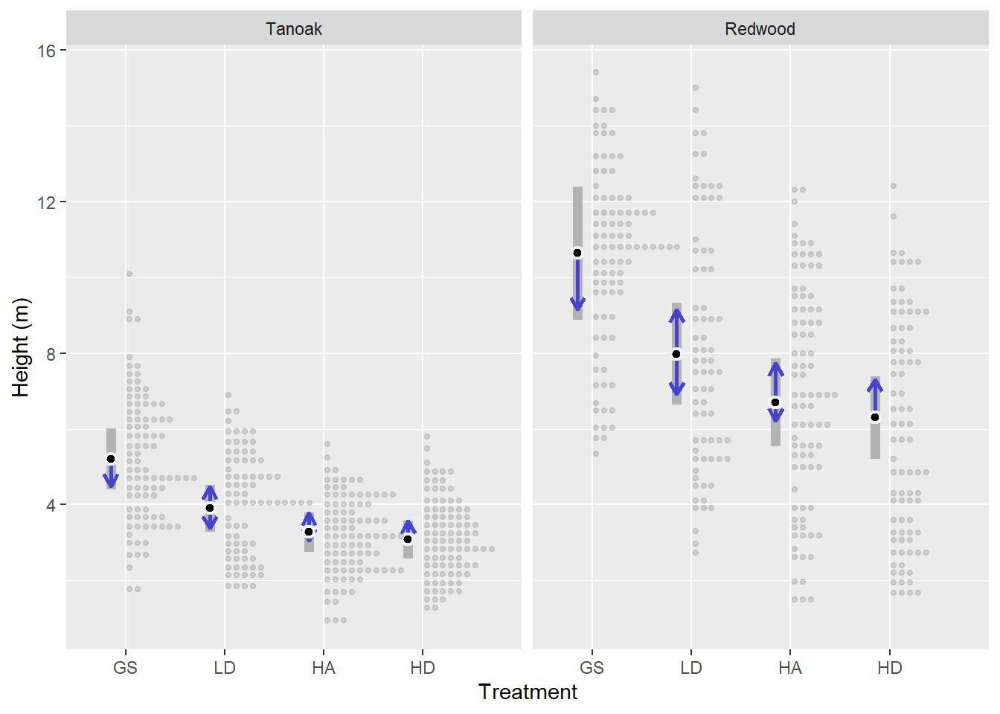
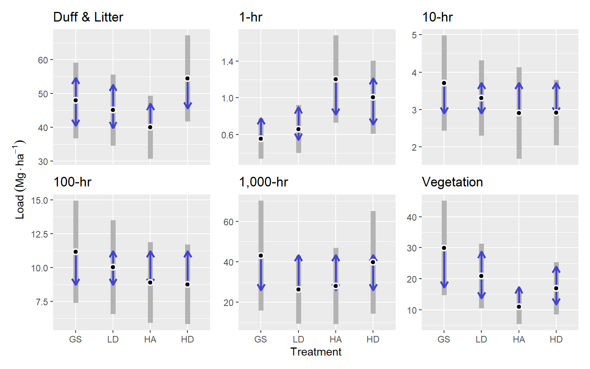

Family: Gamma (log)
Conditional: ba_ha ~ treat * spp + (1 | site:spp)
Dispersion: ~spp (log)
Hurdle: ~spp (logit) 3 Results
3.1 Regeneration composition
3.1.1 Basal area
Composition of regeneration in terms of basal area per acre represented by each species in a 4-meter radius vegetation plot was modeled as a gamma distribution with a log link with fixed effects for treatment and species, and random intercepts for site x species interaction. Dispersion was modeled separately as a function of species, using a log link and the rate of zeros was modeled using the logit link, for each species as well (Listing 3.1).
Focal species for this model included redwood, tanaok, Douglas-fir, and other species. Other species included grand fir, madrone, and California wax-myrtle, of which there was a total of 23, 28, and 16 observations across our 16 macro plots (comprising 64 tree density plots). Generally, each plot had between 0 and 9 observations of other species, except for one macro plot with the LD treatment, which had 16 observations (data not shown).
According to predictions made from this model for other species, there was not enough evidence to confirm a statistically significant difference between treatments. On average, we expect about 0.11 m2 ha-1 of basal area across treatments. The greatest basal area of other species was in the HD treatment which was 0.12 m2 ha-1 greater than in the HA treatment (p = 0.26). The GS and LD treatments were intermediate.
On average, for Douglas-fir, we expect about 0.17 m2 ha-1 of basal area across treatments. The greatest basal area of Douglas-fir was in the GS treatment which was 0.12 m2 ha-1 greater than in the HA treatment (p = 0.76). The LD, HA, and HD treatments were all comparatively similar.
Redwood basal area regeneration showed the greatest treatment response. Where the GS treatment had the greatest basal area of redwood regeneration at m2 ha-1, which was 9.28 m2 ha-1 greater than in the HD treatment (p = 0.19). The LD and HD treatments were intermediate.
Tanoak basal area regeneration was intermediate between that of redwood and Douglas-fir and other species. The GS and LD treatments had similar responses, as did the HA and HD treatments. The GS treatment resulted in 2.24 m2 ha-1 of tanoak basal area, which was 1.33 m2 ha-1 greater than in the HA treatment (p = 0.18).
| spp | 1 | estimate | SE | df | asymp.LCL | asymp.UCL |
|---|---|---|---|---|---|---|
| other | overall | 0.11 | 0.04 | Inf | 0.03 | 0.19 |
| df | overall | 0.17 | 0.06 | Inf | 0.05 | 0.28 |
| rw | overall | 4.03 | 1.52 | Inf | 1.04 | 7.01 |
| to | overall | 1.59 | 0.47 | Inf | 0.67 | 2.50 |

| spp | treatment | estimate | SE | df | asymp.LCL | asymp.UCL |
|---|---|---|---|---|---|---|
| other | gs | 0.13 | 0.08 | Inf | -0.03 | 0.29 |
| other | ld | 0.11 | 0.06 | Inf | -0 | 0.23 |
| other | ha | 0.04 | 0.02 | Inf | -0 | 0.07 |
| other | hd | 0.16 | 0.07 | Inf | 0.02 | 0.3 |
| df | gs | 0.28 | 0.12 | Inf | 0.04 | 0.52 |
| df | ld | 0.11 | 0.05 | Inf | 0.02 | 0.21 |
| df | ha | 0.16 | 0.08 | Inf | 0.01 | 0.31 |
| df | hd | 0.11 | 0.05 | Inf | 0.01 | 0.21 |
| rw | gs | 10.12 | 4.74 | Inf | 0.84 | 19.41 |
| rw | ld | 3.63 | 1.91 | Inf | -0.12 | 7.38 |
| rw | ha | 1.51 | 0.78 | Inf | -0.01 | 3.04 |
| rw | hd | 0.85 | 0.52 | Inf | -0.17 | 1.86 |
| to | gs | 2.24 | 0.79 | Inf | 0.7 | 3.79 |
| to | ld | 1.94 | 0.69 | Inf | 0.58 | 3.3 |
| to | ha | 0.92 | 0.33 | Inf | 0.28 | 1.56 |
| to | hd | 1.25 | 0.44 | Inf | 0.39 | 2.11 |
| spp | contrast | estimate | SE | df | p.value |
|---|---|---|---|---|---|
| other | gs - ld | 0.02 | 0.09 | Inf | 1 |
| other | gs - ha | 0.09 | 0.08 | Inf | 0.6 |
| other | gs - hd | -0.03 | 0.09 | Inf | 0.99 |
| other | ld - ha | 0.08 | 0.06 | Inf | 0.53 |
| other | ld - hd | -0.04 | 0.07 | Inf | 0.91 |
| other | ha - hd | -0.12 | 0.07 | Inf | 0.26 |
| df | gs - ld | 0.17 | 0.11 | Inf | 0.46 |
| df | gs - ha | 0.12 | 0.12 | Inf | 0.76 |
| df | gs - hd | 0.17 | 0.11 | Inf | 0.42 |
| df | ld - ha | -0.05 | 0.08 | Inf | 0.93 |
| df | ld - hd | 0 | 0.05 | Inf | 1 |
| df | ha - hd | 0.05 | 0.07 | Inf | 0.91 |
| rw | gs - ld | 6.49 | 4.6 | Inf | 0.49 |
| rw | gs - ha | 8.61 | 4.56 | Inf | 0.23 |
| rw | gs - hd | 9.28 | 4.64 | Inf | 0.19 |
| rw | ld - ha | 2.12 | 1.8 | Inf | 0.64 |
| rw | ld - hd | 2.79 | 1.83 | Inf | 0.42 |
| rw | ha - hd | 0.67 | 0.79 | Inf | 0.83 |
| to | gs - ld | 0.31 | 0.69 | Inf | 0.97 |
| to | gs - ha | 1.33 | 0.65 | Inf | 0.18 |
| to | gs - hd | 0.99 | 0.64 | Inf | 0.4 |
| to | ld - ha | 1.02 | 0.58 | Inf | 0.29 |
| to | ld - hd | 0.69 | 0.57 | Inf | 0.63 |
| to | ha - hd | -0.33 | 0.37 | Inf | 0.8 |
Figure 3.2 shows the same model as Figure 3.1, but with an emphasis on treatment comparisons between redwood and tanoak. This shows that we expect on average, 7.88 m2 ha-1 greater redwood basal area than tanoak basal area in the GS treatment (p = 0.1), about 1.69 m2 ha-1 in the LD treatment (p = 0.4), and about 0.6 m2 ha-1 in the HA treatment (p = 0.48). In the HD treatment, we expect to see slightly higher tanoak basal area (p = 0.55).
Uncertainty in average Redwood basal area across sites, indicated by the size of 95% confidence intervals, is much greater than that of tanoak in the GS treatment, but this difference diminishes such that GS > LD > HA > HD. In the HD treatment redwood and tanoak average basal area uncertainty across sites is very similar. (Figure 3.1).

3.1.2 Douglas-fir counts
Counts of regenerating Douglas-fir seedlings per vegetation plot (n = 16) were analyzed for differences between harvest treatments using a negative binomial response with a log link, fixed effects for treatment, random effects for site and site x treatment interaction (Listing 3.2).
Family: nbinom1 (log)
Conditional: n ~ treat + (1 | site) + (1 | site:treat) This model for Douglas-fir counts does not indicate any statistically significant differences between treatments. Generally, we expect about 2 seedlings per 4-meter-radius plot, or about 413 seedlings per hectare (Figure 3.3).

| Treatment | estimate | asymp.LCL | asymp.UCL |
|---|---|---|---|
| gs | 479 | 88 | 869 |
| ld | 394 | 60 | 728 |
| ha | 435 | 65 | 805 |
| hd | 632 | 149 | 1115 |
3.2 Sprout heights
3.2.1 Height increment
The selected height increment model used a normal response distribution on the identity link. It included treatment, growth period, species, and the interaction of species and growth period as fixed effects. A random intercept was included for tree (multiple observations) and macro-plot, and an another random effect allowed the response to vary by species differently for each macro plot. The dispersion parameter for the response was modeled (with a log link) as a function of treatment, growth period, species and all three-way interactions (Listing 3.3).
Family: gaussian (identity)
Conditional: ht_inc ~ treat + year * spp + (1 | tree) + (0 + spp | plot)
Dispersion: ~spp * year * treat (log) The model selected based on AIC lacks a treatment x species interaction, suggesting that there is not evidence that treatments affected species differentially. It also lacks a treatment x year interaction. This means that there was not enough evidence to support that treatment was related to changes in growth rate.
The inclusion of treatment factors in the model (0.001 ≤ p < 0.03) suggests that the levels of treatment were associated with different growth rates across species and years. And the species x year interaction (p < 0.001) suggests changes in growth rates are different for redwood and tanoak (Figure 3.4).
For tanoak, height increment was greatest in the GS treatment at 0.48 m yr-1. This was about 0.17 m yr-1 more than in the HA and HD treatments, which were very similar at about 0.31, 0.03, , 0.24, 0.37 m yr-1.
Redwood followed a similar pattern but with more pronounced differences between treatments. Height increment for redwood in the GS treatment was 0.96 m yr-1, which was about 0.4 m yr-1 greater than in the HD treatment (p = 0). Additionally, there was evidence that the GS treatment led to greater height increment than the LD treatment by about 0.17 m yr-1 (p = 0). And the LD treatment was higher than the HA treatment by about 0.15 m yr-1 (p = 0).

| spp | treatment | estimate | SE | df | asymp.LCL | asymp.UCL |
|---|---|---|---|---|---|---|
| LIDE | GS | 0.48 | 0.034 | Inf | 0.41 | 0.54 |
| LIDE | LD | 0.39 | 0.033 | Inf | 0.32 | 0.46 |
| LIDE | HA | 0.31 | 0.032 | Inf | 0.24 | 0.37 |
| LIDE | HD | 0.3 | 0.034 | Inf | 0.23 | 0.37 |
| SESE | GS | 0.96 | 0.052 | Inf | 0.86 | 1.06 |
| SESE | LD | 0.79 | 0.051 | Inf | 0.69 | 0.89 |
| SESE | HA | 0.63 | 0.05 | Inf | 0.54 | 0.73 |
| SESE | HD | 0.56 | 0.052 | Inf | 0.46 | 0.66 |
Redwood growth slowed from 0.80 to 0.67 m yr-1 in the second period and tanoak slowed from 0.39 to 0.34 m yr-1.
Redwood grew faster than tanoak, but slowed down more relative to it in the second period. Height increment for redwood was 0.42 m yr-1 greater than tanoak in the first period and 0.33 m yr-1 greater than tanoak in the second period (Figure 3.5).

| spp | year | estimate | SE | df | asymp.LCL | asymp.UCL |
|---|---|---|---|---|---|---|
| LIDE | 5 | 0.39 | 0.017 | Inf | 0.35 | 0.42 |
| LIDE | 10 | 0.35 | 0.017 | Inf | 0.31 | 0.38 |
| SESE | 5 | 0.8 | 0.043 | Inf | 0.72 | 0.89 |
| SESE | 10 | 0.67 | 0.043 | Inf | 0.59 | 0.75 |
3.2.2 Height at year 10
Sprout heights at year 10 were modeled with a normal response and a log link. The best model included species and treatment, but no interactions in the fixed effects. This suggests that treatments do not affect species differentially in terms of the mean response (height at year 10). It also included a model for dispersion (log link) with predictors species, treatment, and their interaction (Listing 3.4).
Family: gaussian (log)
Conditional: ht ~ treat + spp + (0 + spp | plot)
Dispersion: ~spp * treat (log) Because the best model did not contain a species x treatment interaction for the mean response, treatment comparisons are parallel between species. The GS treatment resulted in greater heights in year 10 than the other treatments (0.001 < p < 0.05). Predicted mean height for redwood ranged from 10.64 m in the GS treatment to 6.3 m in the HD treatment. For tanoak, predicted mean height ranged from 5.2 in the GS treatment to 3.08 in the HD treatment. Predicted mean heights followed the pattern GS > LD > HA > HD (Figure 3.6).

| spp | year | estimate | SE | df | asymp.LCL | asymp.UCL |
|---|---|---|---|---|---|---|
| LIDE | GS | 5.2 | 0.41 | Inf | 4.4 | 6 |
| LIDE | LD | 3.9 | 0.31 | Inf | 3.3 | 4.5 |
| LIDE | HA | 3.3 | 0.27 | Inf | 2.8 | 3.8 |
| LIDE | HD | 3.1 | 0.25 | Inf | 2.6 | 3.6 |
| SESE | GS | 10.6 | 0.9 | Inf | 8.9 | 12.4 |
| SESE | LD | 8 | 0.69 | Inf | 6.6 | 9.3 |
| SESE | HA | 6.7 | 0.59 | Inf | 5.5 | 7.8 |
| SESE | HD | 6.3 | 0.55 | Inf | 5.2 | 7.4 |
| spp | contrast | estimate | SE | df | p.value |
|---|---|---|---|---|---|
| LIDE | GS - LD | 1.3 | 0.5 | Inf | 0.05 |
| LIDE | GS - HA | 1.93 | 0.48 | Inf | 0 |
| LIDE | GS - HD | 2.12 | 0.47 | Inf | 0 |
| LIDE | LD - HA | 0.63 | 0.4 | Inf | 0.4 |
| LIDE | LD - HD | 0.82 | 0.39 | Inf | 0.16 |
| LIDE | HA - HD | 0.19 | 0.36 | Inf | 0.95 |
| SESE | GS - LD | 2.66 | 1.03 | Inf | 0.05 |
| SESE | GS - HA | 3.94 | 0.98 | Inf | 0 |
| SESE | GS - HD | 4.33 | 0.97 | Inf | 0 |
| SESE | LD - HA | 1.29 | 0.82 | Inf | 0.4 |
| SESE | LD - HD | 1.68 | 0.81 | Inf | 0.16 |
| SESE | HA - HD | 0.39 | 0.75 | Inf | 0.95 |
3.3 Fuels
3.3.1 Pre-pct
Gamma distributed, linear multi-level models, with a log link were used for all six fuel class responses. Random intercepts were specified for three levels of nesting, representing sites, treatment blocks, and transect corners. All models except for the duff & litter model included a hurdle model to account for zero, which was modeled with a logit link. For the 10-hr fuel model, the hurdle portion was modeled as a function of treatment, and for the others, it was modeled as a single rate for all observations. The 10-hr fuel model also included a dispersion model, which was modeled with a log link, using treatment as a predictor (Table 3.9).
| class | Family | Link | Conditional | Dispersion (log) | Hurdle (logit) |
|---|---|---|---|---|---|
| Duff & Litter | Gamma | log | load ~ treatment + (1 | site) + (1 | block) + (1 | corner) | ~1 | ~0 |
| 1-hr | Gamma | log | load ~ treatment + (1 | site) + (1 | block) + (1 | corner) | ~1 | ~1 |
| 10-hr | Gamma | log | load ~ treatment + (1 | site) + (1 | block) + (1 | corner) | ~treatment | ~treatment |
| 100-hr | Gamma | log | load ~ treatment + (1 | site) + (1 | block) + (1 | corner) | ~1 | ~1 |
| 1,000-hr | Gamma | log | load ~ treatment + (1 | site) + (1 | block) + (1 | corner) | ~1 | ~1 |
| Vegetation | Gamma | log | load ~ treatment + (1 | site) + (1 | block) + (1 | corner) | ~1 | ~1 |
For Duff & Litter, the largest difference was between the HD and HA treatments. The HD treatment had about 54.4 Mg ha-1, and was about 14.39 Mg ha-1 greater than the HA treatment (p = 0.09). Generally, all treatments were similar, with estimated loading of around 47 Mg ha-1.
One-hour fuels were highest in the HA treatment, with an expected value of 1.2 Mg ha-1, which was about Mg ha-1 greater than in the GS treatment (p = 0.03). One-hour fuels in the LD and HD treatments were intermediate but the LD was more similar to the GS and the HD was more similar to the HA treatment.
Ten, hundred and thousand-hour fuels were statistically, very similar across treatments (p = 0.7 — p = 1). Treatment averages had maximum differences of around 1, 3, and 10 Mg ha-1 for ten, hundred, and thousand-hour fuels, respectively.
Vegetative fuel loading was greatest in the GS treatment, with an expected value of 29.94 Mg ha-1, which was about
18.95 Mg ha-1 greater than in the HA treatment (p = 0.05) and LD and HD treatments were intermediate. (Figure 3.7).

| class | treatment | estimate | SE | df | asymp.LCL | asymp.UCL |
|---|---|---|---|---|---|---|
| dufflitter | gs | 47.93 | 5.69 | Inf | 36.76 | 59.09 |
| dufflitter | ld | 45.09 | 5.35 | Inf | 34.6 | 55.59 |
| dufflitter | ha | 40.01 | 4.75 | Inf | 30.71 | 49.32 |
| dufflitter | hd | 54.4 | 6.46 | Inf | 41.74 | 67.06 |
| onehr | gs | 0.55 | 0.11 | Inf | 0.33 | 0.77 |
| onehr | ld | 0.66 | 0.13 | Inf | 0.4 | 0.92 |
| onehr | ha | 1.2 | 0.24 | Inf | 0.73 | 1.68 |
| onehr | hd | 1.01 | 0.2 | Inf | 0.61 | 1.41 |
| tenhr | gs | 3.71 | 0.65 | Inf | 2.43 | 4.98 |
| tenhr | ld | 3.31 | 0.52 | Inf | 2.3 | 4.32 |
| tenhr | ha | 2.9 | 0.63 | Inf | 1.68 | 4.13 |
| tenhr | hd | 2.91 | 0.45 | Inf | 2.04 | 3.79 |
| hundhr | gs | 11.17 | 1.92 | Inf | 7.41 | 14.93 |
| hundhr | ld | 10.03 | 1.76 | Inf | 6.58 | 13.47 |
| hundhr | ha | 8.9 | 1.52 | Inf | 5.92 | 11.88 |
| hundhr | hd | 8.76 | 1.49 | Inf | 5.84 | 11.69 |
| thoushr | gs | 43.08 | 13.84 | Inf | 15.95 | 70.22 |
| thoushr | ld | 26.25 | 8.58 | Inf | 9.43 | 43.06 |
| thoushr | ha | 28.06 | 9.58 | Inf | 9.29 | 46.83 |
| thoushr | hd | 39.75 | 12.94 | Inf | 14.38 | 65.11 |
| veg | gs | 29.94 | 7.78 | Inf | 14.69 | 45.19 |
| veg | ld | 20.88 | 5.32 | Inf | 10.45 | 31.3 |
| veg | ha | 10.99 | 2.86 | Inf | 5.39 | 16.6 |
| veg | hd | 16.86 | 4.32 | Inf | 8.4 | 25.32 |
| class | contrast | estimate | SE | df | p.value |
|---|---|---|---|---|---|
| onehr | gs - ha | -0.6491 | 0.24 | Inf | 0.033 |
| veg | gs - ha | 18.947 | 7.46 | Inf | 0.054 |
| dufflitter | ha - hd | -14.3869 | 6.16 | Inf | 0.09 |
| onehr | ld - ha | -0.5439 | 0.24 | Inf | 0.115 |
| onehr | gs - hd | -0.4529 | 0.2 | Inf | 0.119 |
| veg | ld - ha | 9.8847 | 5.29 | Inf | 0.242 |
| veg | gs - hd | 13.0772 | 7.78 | Inf | 0.334 |
| onehr | ld - hd | -0.3477 | 0.21 | Inf | 0.353 |
| dufflitter | ld - hd | -9.3078 | 6.38 | Inf | 0.463 |
| dufflitter | gs - ha | 7.9119 | 5.63 | Inf | 0.497 |
| veg | ha - hd | -5.8698 | 4.47 | Inf | 0.555 |
| hundhr | gs - hd | 2.405 | 2.13 | Inf | 0.671 |
| veg | gs - ld | 9.0623 | 8.11 | Inf | 0.679 |
| thoushr | gs - ld | 16.832 | 15.77 | Inf | 0.71 |
| hundhr | gs - ha | 2.2729 | 2.15 | Inf | 0.715 |
| tenhr | gs - hd | 0.7915 | 0.79 | Inf | 0.748 |
| dufflitter | gs - hd | -6.475 | 6.53 | Inf | 0.755 |
| dufflitter | ld - ha | 5.0791 | 5.43 | Inf | 0.786 |
| thoushr | gs - ha | 15.0192 | 16.34 | Inf | 0.795 |
| thoushr | ld - hd | -13.4991 | 14.91 | Inf | 0.802 |
| tenhr | gs - ha | 0.8008 | 0.9 | Inf | 0.809 |
| thoushr | ha - hd | -11.6863 | 15.4 | Inf | 0.873 |
| onehr | ha - hd | 0.1962 | 0.27 | Inf | 0.889 |
| onehr | gs - ld | -0.1051 | 0.15 | Inf | 0.896 |
| veg | ld - hd | 4.015 | 5.85 | Inf | 0.902 |
| hundhr | ld - hd | 1.2626 | 2.02 | Inf | 0.924 |
| tenhr | ld - hd | 0.3916 | 0.68 | Inf | 0.94 |
| hundhr | ld - ha | 1.1306 | 2.03 | Inf | 0.945 |
| hundhr | gs - ld | 1.1424 | 2.28 | Inf | 0.959 |
| tenhr | ld - ha | 0.401 | 0.81 | Inf | 0.96 |
| tenhr | gs - ld | 0.3998 | 0.83 | Inf | 0.963 |
| dufflitter | gs - ld | 2.8328 | 5.93 | Inf | 0.964 |
| thoushr | gs - hd | 3.3329 | 18.36 | Inf | 0.998 |
| thoushr | ld - ha | -1.8127 | 12.21 | Inf | 0.999 |
| hundhr | ha - hd | 0.132 | 1.85 | Inf | 1 |
| tenhr | ha - hd | -0.0094 | 0.77 | Inf | 1 |
| class | 1 | estimate | SE | df | asymp.LCL | asymp.UCL |
|---|---|---|---|---|---|---|
| dufflitter | overall | 46.86 | 4.21 | Inf | 38.6 | 55.1 |
| onehr | overall | 0.86 | 0.12 | Inf | 0.63 | 1.1 |
| tenhr | overall | 3.21 | 0.28 | Inf | 2.65 | 3.8 |
| hundhr | overall | 9.71 | 1.1 | Inf | 7.56 | 11.9 |
| thoushr | overall | 34.29 | 6.31 | Inf | 21.93 | 46.6 |
| veg | overall | 19.67 | 3.52 | Inf | 12.77 | 26.6 |
3.3.2 Post-pct
The response for all six, post-pct fuel classes were modeled with a gamma distribution and a log link, and included the same multi-level random effects as for the pre-pct models. Dispersion models with treatment as the only predictor were included for 1-hr and 100-hr fuel classes. All models included a hurdle portion to model zeros using a logit link. For 100-hr fuels, the hurdle portion included treatment and site as predictors. For the rest, a constant rate of zeros for all observations was used (Table 3.13).
| class | Family | Link | Conditional | Dispersion (log) | Hurdle (logit) |
|---|---|---|---|---|---|
| 1-hr | Gamma | log | load ~ treatment + (1 | site) + (1 | block) + (1 | corner) | ~treatment + site | ~1 |
| 10-hr | Gamma | log | load ~ treatment + (1 | site) + (1 | block) + (1 | corner) | ~1 | ~1 |
| 100-hr | Gamma | log | load ~ treatment + (1 | site) + (1 | block) + (1 | corner) | ~treatment + site | ~treatment + site |
| 1,000-hr | Gamma | log | load ~ treatment + (1 | site) + (1 | block) + (1 | corner) | ~1 | ~1 |
| Vegetation | Gamma | log | load ~ treatment + (1 | site) + (1 | block) + (1 | corner) | ~1 | ~1 |
| Vegetation Difference | Gamma | log | load ~ treatment + (1 | site) + (1 | block) + (1 | corner) | ~1 | ~1 |
Pre-commercial thinning resulted in greater stratification of treatments (Figure 3.8). One-hour fuels for most treatments were around 2.5 Mg ha-1, but the HA treatment was lower than these at about 1.38 Mg ha-1 (p <= ).
The GS treatment had the greatest 10-hr fuel loading with 9 Mg ha-1, which was greater than the LD, HA, and HD treatments by
3.5, 5.15, and 5.94 Mg ha-1, respectively ( p = 0.06, p < 0.001, and p = 0). The LD treatment also had about 2.43 Mg ha-1 more 10-hr fuels that the HD treatment (p = 0.03).
Hundred-hour fuels followed a similar trend as the 10-hr fuels. They were greatest in the GS treatment, with an average of about 19.12 Mg ha-1, which was about 11.69 Mg ha-1 greater than the HD treatment (p = 0.03).
Thousand-hour fuels were greatest in the HD treatment, with an average of about r fuel_post_means$thoushr$hd$estimate Mg ha-1, which was about 37.71 Mg ha-1 greater than the LD and HA treatments (p <= 0.14). The GS treatment was intermediate.
Fuel loading for live vegetation was similar across treatments at around 2.3 Mg ha-1.
The difference in vegetation loading before and after PCT was greatest in the GS treatment at about 29.6 Mg ha-1, which was greater than the HA and HD treatments by about 18 Mg ha-1 (p = 0.09 and p = 0.05, respectively). The LD treatment was intermediate.

| class | treatment | estimate | SE | df | asymp.LCL | asymp.UCL |
|---|---|---|---|---|---|---|
| onehr | gs | 2.6 | 0.5 | Inf | 1.63 | 3.6 |
| onehr | ld | 2.8 | 0.55 | Inf | 1.71 | 3.9 |
| onehr | ha | 1.4 | 0.25 | Inf | 0.89 | 1.9 |
| onehr | hd | 2.2 | 0.38 | Inf | 1.47 | 2.9 |
| tenhr | gs | 9 | 1.7 | Inf | 5.68 | 12.3 |
| tenhr | ld | 5.5 | 1.05 | Inf | 3.44 | 7.6 |
| tenhr | ha | 3.9 | 0.73 | Inf | 2.41 | 5.3 |
| tenhr | hd | 3.1 | 0.59 | Inf | 1.92 | 4.2 |
| hundhr | gs | 19.1 | 4.52 | Inf | 10.26 | 28 |
| hundhr | ld | 13.2 | 2.97 | Inf | 7.36 | 19 |
| hundhr | ha | 10.5 | 2.41 | Inf | 5.81 | 15.3 |
| hundhr | hd | 7.4 | 1.74 | Inf | 4.03 | 10.8 |
| thoushr | gs | 43.9 | 10.61 | Inf | 23.08 | 64.7 |
| thoushr | ld | 22.8 | 5.33 | Inf | 12.31 | 33.2 |
| thoushr | ha | 23.2 | 6.21 | Inf | 11.04 | 35.4 |
| thoushr | hd | 60.5 | 16.55 | Inf | 28.05 | 92.9 |
| veg | gs | 2.7 | 0.87 | Inf | 0.96 | 4.4 |
| veg | ld | 1.9 | 0.61 | Inf | 0.7 | 3.1 |
| veg | ha | 3.2 | 1.12 | Inf | 1.06 | 5.4 |
| veg | hd | 2.2 | 0.71 | Inf | 0.78 | 3.6 |
| veg_diff | gs | 29.6 | 7.99 | Inf | 13.95 | 45.3 |
| veg_diff | ld | 17.2 | 4.22 | Inf | 8.89 | 25.4 |
| veg_diff | ha | 10.6 | 2.98 | Inf | 4.74 | 16.4 |
| veg_diff | hd | 11.8 | 3.02 | Inf | 5.91 | 17.7 |
| class | contrast | estimate | SE | df | p.value |
|---|---|---|---|---|---|
| tenhr | gs - hd | 5.94 | 1.46 | Inf | 0.00026 |
| tenhr | gs - ha | 5.15 | 1.43 | Inf | 0.00172 |
| onehr | ld - ha | 1.42 | 0.43 | Inf | 0.00585 |
| onehr | gs - ha | 1.24 | 0.39 | Inf | 0.00889 |
| onehr | ha - hd | -0.83 | 0.26 | Inf | 0.00919 |
| hundhr | gs - hd | 11.69 | 4.16 | Inf | 0.02573 |
| tenhr | ld - hd | 2.43 | 0.87 | Inf | 0.02637 |
| veg_diff | gs - ha | 19.03 | 7.48 | Inf | 0.05357 |
| tenhr | gs - ld | 3.5 | 1.41 | Inf | 0.06286 |
| veg_diff | gs - hd | 17.78 | 7.55 | Inf | 0.08602 |
| thoushr | ld - hd | -37.71 | 17.15 | Inf | 0.12359 |
| thoushr | ha - hd | -37.27 | 17.43 | Inf | 0.14104 |
| hundhr | ld - hd | 5.75 | 2.75 | Inf | 0.1565 |
| hundhr | gs - ha | 8.59 | 4.21 | Inf | 0.17315 |
| tenhr | ld - ha | 1.65 | 0.88 | Inf | 0.24322 |
| thoushr | gs - ld | 21.12 | 11.6 | Inf | 0.26381 |
| thoushr | gs - ha | 20.67 | 12.01 | Inf | 0.31242 |
| veg_diff | gs - ld | 12.44 | 7.67 | Inf | 0.36644 |
| veg_diff | ld - ha | 6.59 | 4.3 | Inf | 0.41898 |
| onehr | ld - hd | 0.59 | 0.42 | Inf | 0.49237 |
| hundhr | gs - ld | 5.95 | 4.31 | Inf | 0.51297 |
| veg | ld - ha | -1.35 | 0.98 | Inf | 0.51617 |
| hundhr | ha - hd | 3.1 | 2.32 | Inf | 0.54089 |
| veg_diff | ld - hd | 5.35 | 4.3 | Inf | 0.59869 |
| tenhr | ha - hd | 0.79 | 0.64 | Inf | 0.60281 |
| veg | ha - hd | 1.07 | 0.97 | Inf | 0.68792 |
| onehr | gs - hd | 0.41 | 0.37 | Inf | 0.6903 |
| veg | gs - ld | 0.77 | 0.76 | Inf | 0.7434 |
| hundhr | ld - ha | 2.65 | 2.91 | Inf | 0.80002 |
| thoushr | gs - hd | -16.6 | 19.3 | Inf | 0.82556 |
| veg | gs - hd | 0.49 | 0.8 | Inf | 0.92729 |
| veg | gs - ha | -0.58 | 1.04 | Inf | 0.94512 |
| veg | ld - hd | -0.28 | 0.66 | Inf | 0.97521 |
| onehr | gs - ld | -0.18 | 0.48 | Inf | 0.98118 |
| veg_diff | ha - hd | -1.24 | 3.52 | Inf | 0.98495 |
| thoushr | ld - ha | -0.45 | 7.78 | Inf | 0.99993 |
| class | 1 | estimate | SE | df | asymp.LCL | asymp.UCL |
|---|---|---|---|---|---|---|
| onehr | overall | 2.3 | 0.36 | Inf | 1.5 | 3 |
| tenhr | overall | 5.4 | 0.84 | Inf | 3.7 | 7 |
| hundhr | overall | 12.6 | 2.2 | Inf | 8.3 | 16.9 |
| thoushr | overall | 37.6 | 5.61 | Inf | 26.6 | 48.6 |
| veg | overall | 2.5 | 0.65 | Inf | 1.2 | 3.8 |
| veg_diff | overall | 17.3 | 3.33 | Inf | 10.8 | 23.8 |
3.3.3 Pre-post commercial thinning comparison
Pre-commercial thinning led to a small increase in average 100-hr fuel loading, only for the GS treatment, increased 10-hr fuels in the GS and LD treatments, and increased 1-hr fuels for all but the HA treatment (Figure 3.9), although these results are not statistically comparable, due to slightly different model structures.